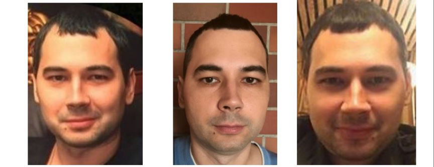
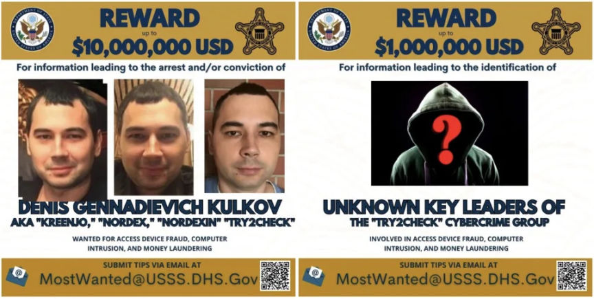
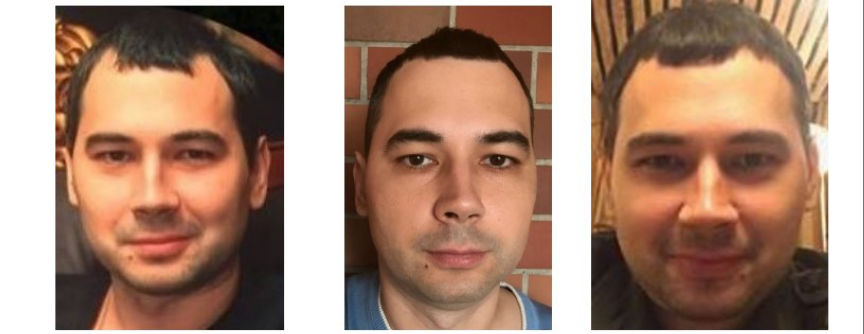
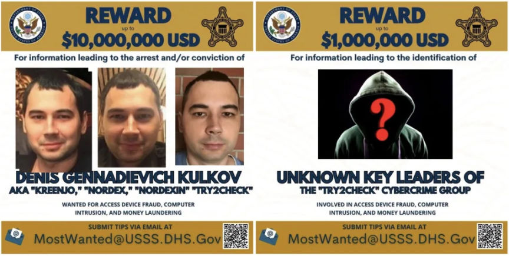

Russian Operator of Try2Check Indicted
~3 min read | Published on 2023-05-05, tagged Credit-Cards, Indicted, Russia, admin using 556 words.
A Russian man accused of being the administrator of Try2Check was charged following the takedown of the card-checking services provider platform.

According to the US Attorney's Office for the Eastern District of New York, 43-year-old Denis Gennadievich Kulkov of Russia operated Try2Check, a now-defunct card checking services platform on both the dark web and clearnet from at least 2005 to April 2023.
Try2Check allowed its users to check whether the stolen cards in their possession were valid. For a small fee, the users of the platform could conduct checks and receive a report of how many cards in a batch of stolen credit cards were valid.
Investigations into Try2Checkopeartions were launched in 2013 by the FBI and US Secret Service. According to the complaint, the investigators established that Try2Check exploited the services of an undisclosed US payment processing company.
Try2Check used the company's preauthorization services to check the validity of cards. Try2Check impersonated merchants seeking preauthorization services from the company.
In November 2018, an undercover agent used Try2Check's card checking services to check the validity of twenty newly created credit card numbers.
The checks for the validity of the cards appeared on the company's preauthorization system. The system revealed that the checks had been conducted by fictitious US-based merchants. The system also revealed that the checks for the cards could be tied to nine IP addresses.
The investigators established that between April 13, 2018, and December 31, 2018, the IP addresses had submitted over 16 million credit card numbers for preauthorization requests.
To tie Kulkov to the operations of Try2Check, the investigators focused on the user names "Kreenjo" and "Nordex" which advertised card-checking services on multiple carding forums. Nordex and Kreenjo used the same ICQ number. Nordex also identified as Denis from Samara, Russia. The IP address used by Nordex to join the carding forums was of an Internet Service Provider located in Samara, Russia.
The investigators later obtained information from an undisclosed cryptocurrency exchange revealing that a user with the username "Nordexin" was on the exchange. The user used the name "Denis Kulkov" and an address in Samara, Russia to open the account. The user provided Kulkov's passport and Russian driver’s license for verification.
The exchange also gave the investigators a phone number and two email addresses linked to the Nordexin account.
In May 2019, the investigators acquired a search warrant for an undisclosed email hosting and cloud backup services provider associated with one of the Nordexin email addresses.
The investigators found out that the account had been used to save screenshots of Try2Check's admin panel. One of the images showed a list of the platform's users and their Bitcoin balances.
The account also had multiple emails sent by Kulkov, including to a cryptocurrency exchange he wanted to use to cash out his cryptocurrency. The investigators believe Kulkov made over $18 million in Bitcoin from operating Try2Check.

The US Department of State announced a reward of up to $10 million for information that will result in Kulkov's arrest or conviction. The department also offered a $1 million reward for information that could result in the identification of other suspects involved in the operation of Try2Check.
A four-count indictment unsealed on May 3, 2023, charges Kulkov with access device fraud, computer intrusion, and money laundering.
If arrested and convicted, Kulkov could be sentenced to 20 years in prison.

Denis Gennadievich Kulkov
According to the US Attorney's Office for the Eastern District of New York, 43-year-old Denis Gennadievich Kulkov of Russia operated Try2Check, a now-defunct card checking services platform on both the dark web and clearnet from at least 2005 to April 2023.
Try2Check allowed its users to check whether the stolen cards in their possession were valid. For a small fee, the users of the platform could conduct checks and receive a report of how many cards in a batch of stolen credit cards were valid.
Investigations into Try2Checkopeartions were launched in 2013 by the FBI and US Secret Service. According to the complaint, the investigators established that Try2Check exploited the services of an undisclosed US payment processing company.
Try2Check used the company's preauthorization services to check the validity of cards. Try2Check impersonated merchants seeking preauthorization services from the company.
In November 2018, an undercover agent used Try2Check's card checking services to check the validity of twenty newly created credit card numbers.
The checks for the validity of the cards appeared on the company's preauthorization system. The system revealed that the checks had been conducted by fictitious US-based merchants. The system also revealed that the checks for the cards could be tied to nine IP addresses.
The investigators established that between April 13, 2018, and December 31, 2018, the IP addresses had submitted over 16 million credit card numbers for preauthorization requests.
To tie Kulkov to the operations of Try2Check, the investigators focused on the user names "Kreenjo" and "Nordex" which advertised card-checking services on multiple carding forums. Nordex and Kreenjo used the same ICQ number. Nordex also identified as Denis from Samara, Russia. The IP address used by Nordex to join the carding forums was of an Internet Service Provider located in Samara, Russia.
The investigators later obtained information from an undisclosed cryptocurrency exchange revealing that a user with the username "Nordexin" was on the exchange. The user used the name "Denis Kulkov" and an address in Samara, Russia to open the account. The user provided Kulkov's passport and Russian driver’s license for verification.
The exchange also gave the investigators a phone number and two email addresses linked to the Nordexin account.
In May 2019, the investigators acquired a search warrant for an undisclosed email hosting and cloud backup services provider associated with one of the Nordexin email addresses.
The investigators found out that the account had been used to save screenshots of Try2Check's admin panel. One of the images showed a list of the platform's users and their Bitcoin balances.
The account also had multiple emails sent by Kulkov, including to a cryptocurrency exchange he wanted to use to cash out his cryptocurrency. The investigators believe Kulkov made over $18 million in Bitcoin from operating Try2Check.

The rewards by the US Department of State
The US Department of State announced a reward of up to $10 million for information that will result in Kulkov's arrest or conviction. The department also offered a $1 million reward for information that could result in the identification of other suspects involved in the operation of Try2Check.
A four-count indictment unsealed on May 3, 2023, charges Kulkov with access device fraud, computer intrusion, and money laundering.
If arrested and convicted, Kulkov could be sentenced to 20 years in prison.